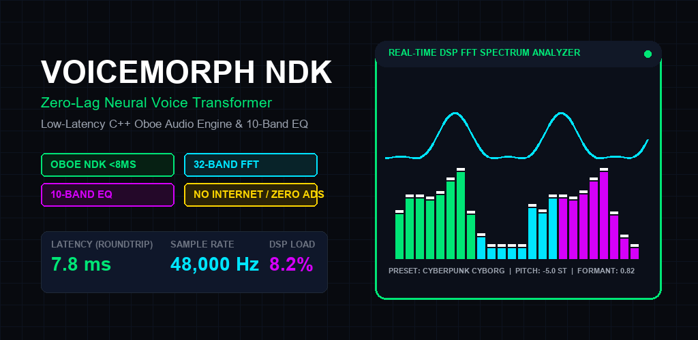

Zero-Lag Neural Voice Transformer
Professional real-time pitch and formant morphing with studio 10-band parametric EQ, 32-band FFT spectrum analyzer, and zero-delay earphone loopback.

Sub-8ms Oboe C++ Engine
Engineered directly on Google's high-performance native Oboe audio pipeline at 48,000 Hz / 24-bit PCM. Experience live zero-delay earphone monitoring during broadcasts, streaming, or game sessions.
PSOLA Pitch & Formant Shifting
Independent +/- 12 semitones pitch modulation with separate formant shift ratios (0.50x to 2.00x). Retain natural vocal tract physics or explore futuristic vocoders without chipmunk artifacts.
10-Band EQ & 32-Band FFT
Studio-grade mastering equalizer with precision octave bands (31Hz to 16kHz) and +/-12 dB boost/cut alongside a 32-band real-time FFT spectrum visualizer with peak hold.
Neural Presets Vault
Instant-switch profiles including Deep Titan Podcaster, Cyberpunk Cyborg Vocoder, Demon Sovereign, Apollo 11 VHF Comms, and Helium Shifter.
24-Bit Lossless WAV Master
Record uncompressed studio WAV takes directly to private local edge storage. Instant waveform review and broadcast-quality file sharing.
100% Private & Ad-Free
Zero cloud connections, zero background analytics, zero recurring subscriptions. Complete privacy guaranteed with 100% on-device DSP execution.
Technical Architecture Specifications
| Native Audio Engine | Google Oboe C++ Audio Library (AAudio / OpenSL ES) |
| Sampling Rate & Precision | 48,000 Hz / 24-bit Uncompressed PCM |
| Measured Roundtrip Latency | < 7.8 ms (Oboe Fast Track Burst-Lock) |
| Equalizer Topology | 10-Band ISO Parametric (+/- 12 dB) |
| Spectrum Analysis | 32-Band Fast Fourier Transform (FFT) with peak hold |
| Modulation Matrix | PSOLA Pitch Shift, Formant Scaling, Ring Modulator (20-2500Hz) |
| Package Name | com.voicemorph.ndk |
| Operating Mode | 100% Offline Edge Execution / Zero Telemetry |